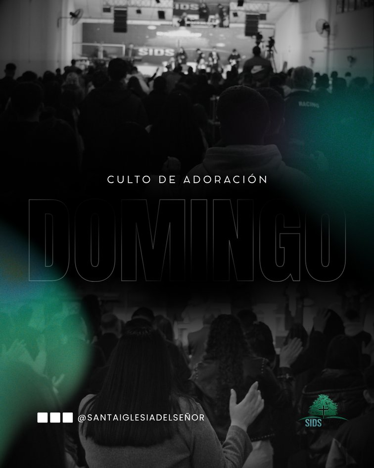
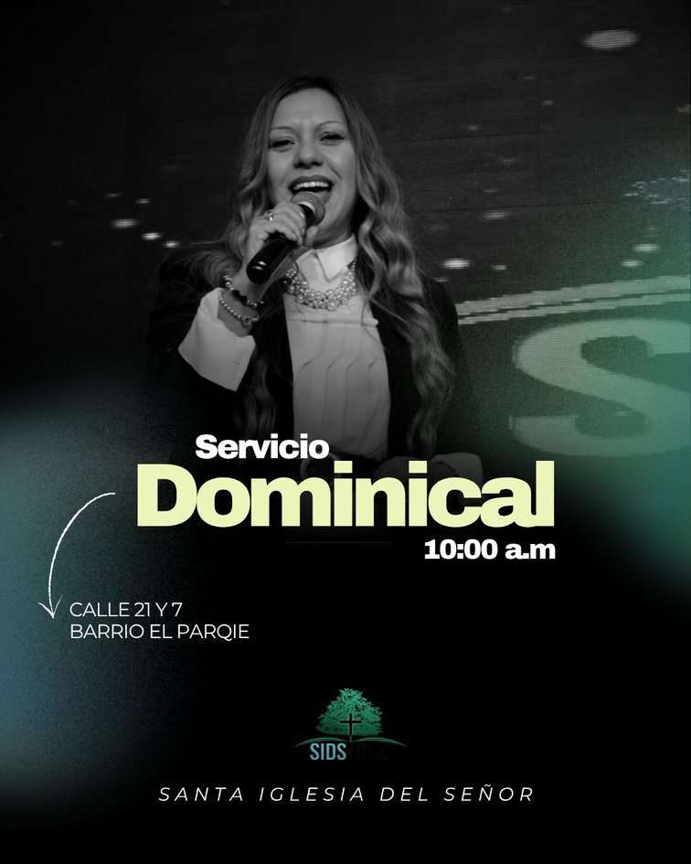

Una iglesia
comprometida
con el Evangelio
Santa Iglesia del Señor es una iglesia cristiana evangélica comprometida con la predicación del Evangelio de Jesucristo, la enseñanza de la Palabra de Dios y el acompañamiento espiritual de las familias y la comunidad.
Nuestra congregación es guiada por los Obispos Dr. Edgardo Norberto Montenegro y Dra. Magdalena Ciulla de Montenegro, quienes desarrollan su ministerio con dedicación, amor y servicio.
Estar donde debo estar nos ahorrará dolores de cabeza.
— Santa Iglesia del Señor
Espacios para la
adoración y el
crecimiento espiritual
En SIDS contamos con espacios especialmente preparados para la adoración, la enseñanza bíblica, la comunión y el crecimiento espiritual de toda la familia.
Te invitamos a ser parte de nuestras reuniones. ¡Las puertas están abiertas!
Fe · Esperanza · Amor
Tres pilares que guían nuestra misión y visión como iglesia. Cada uno se entrelaza con los otros para formar una vida en Cristo.
Conocé más →Una comunidad que crece
Te esperamos
con las puertas abiertas
Cuatro encuentros semanales para adorar, aprender, orar y crecer en familia.
- Domingo 10:00 am Servicio Dominical
- Domingo 18:00 – 20:00 hs Reunión General
- Miércoles 19:00 hs Culto de Oración
- Miércoles 19:30 / 20:30 hs Escuela de Ministerio
Salmos 34:19
MUCHAS SON LAS AFLICCIONES DEL JUSTO PERO DE TODAS ELLAS LO LIBRARÁ EL SEÑOR.
— Santa Iglesia del Señor